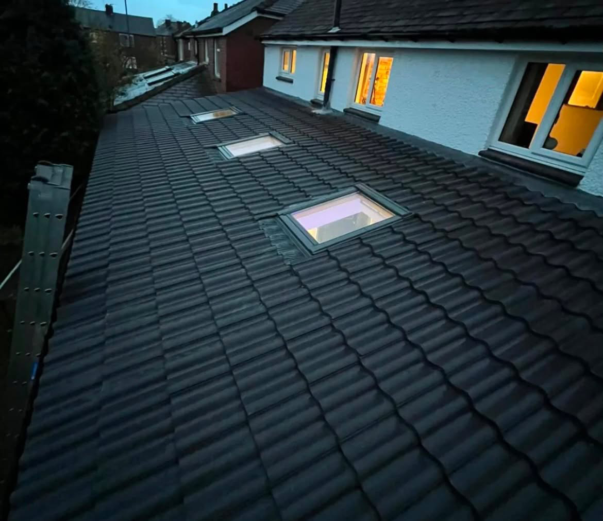
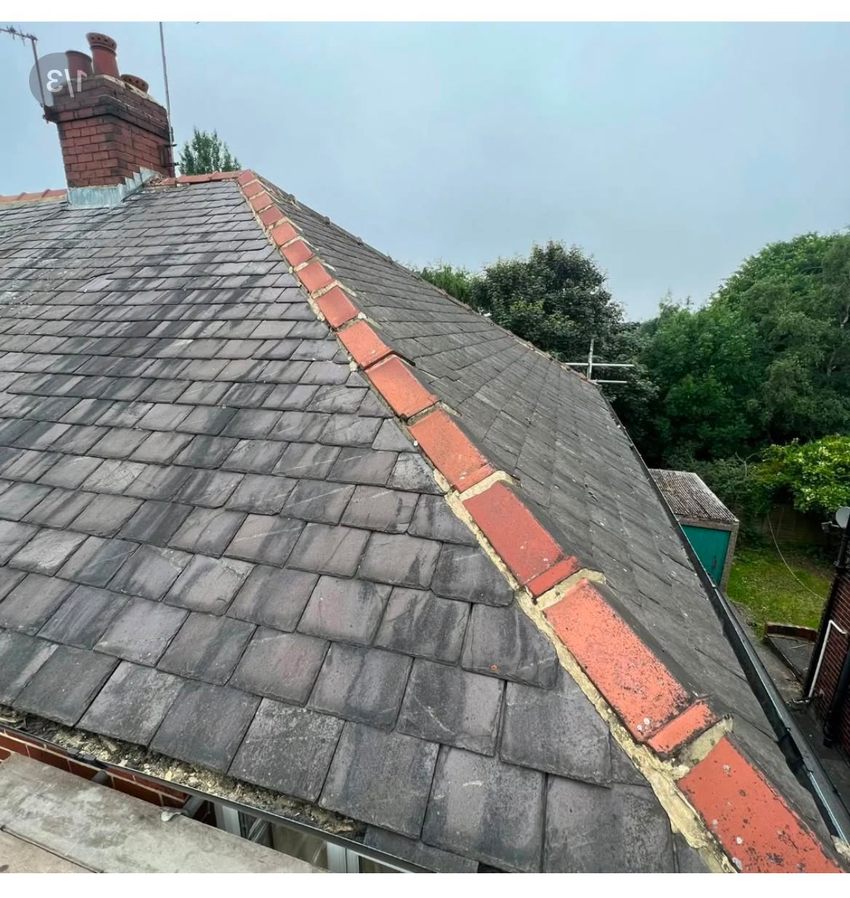
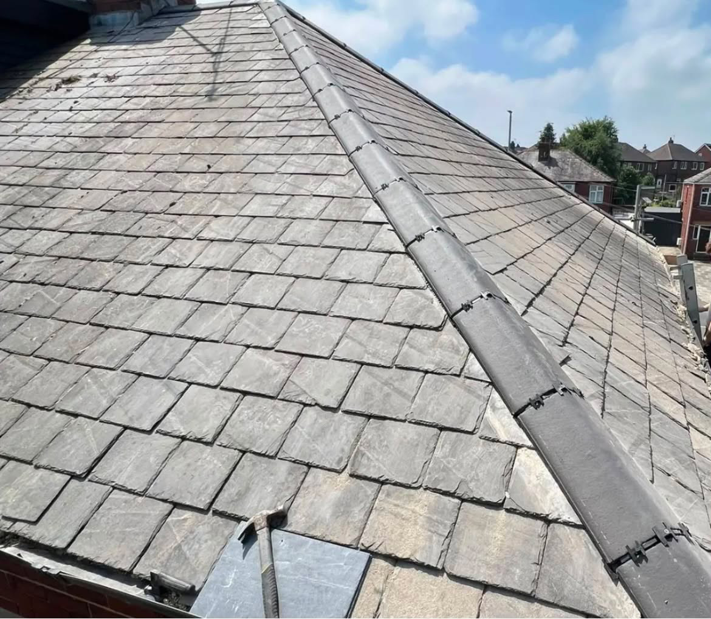
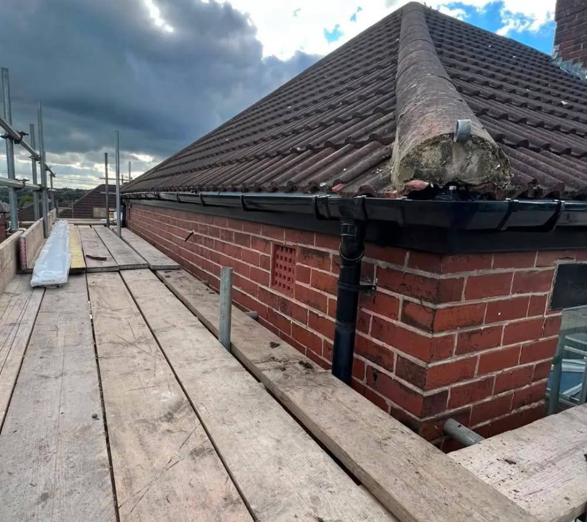
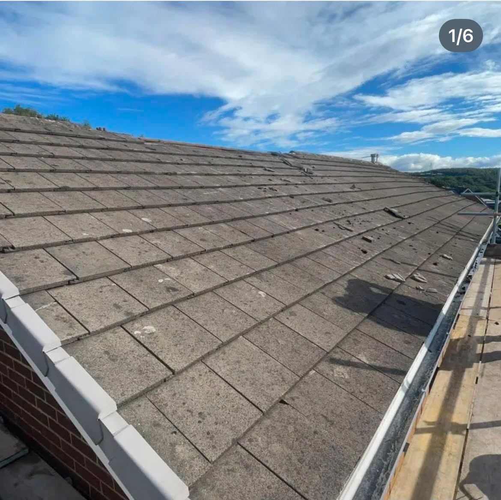
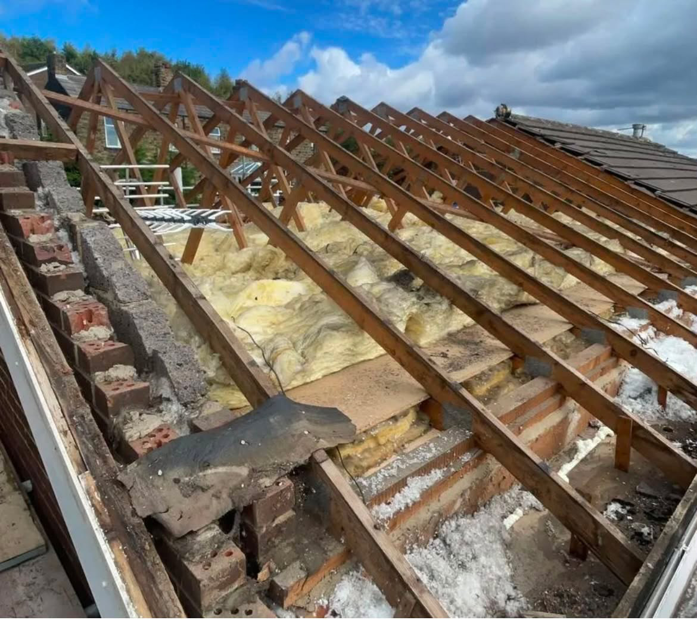
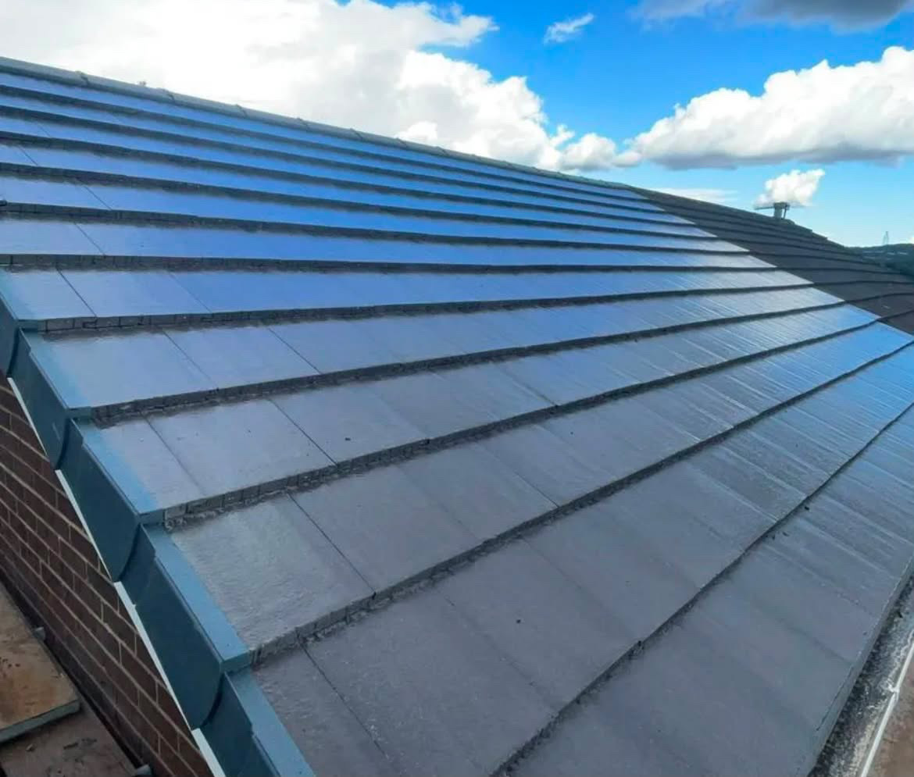
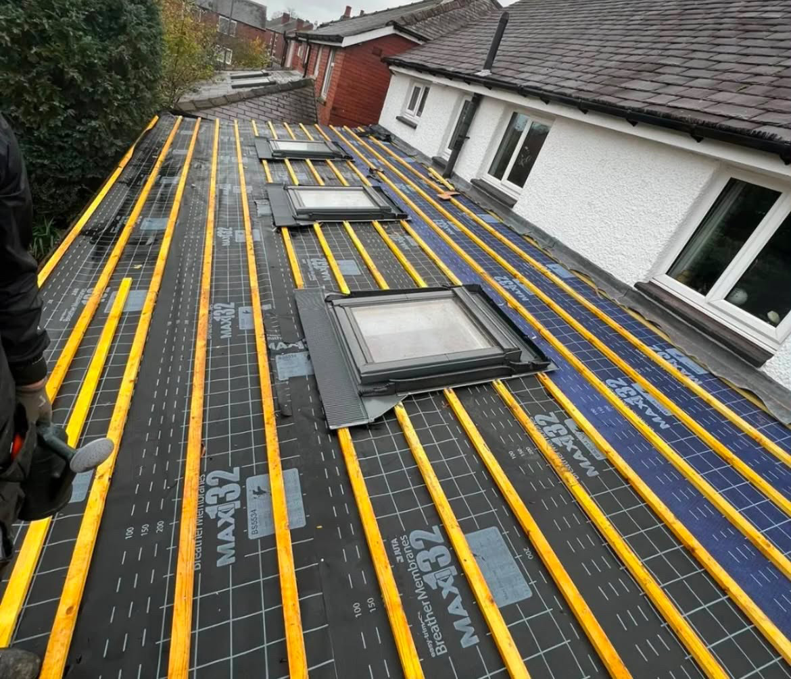

Recent work
ON THE
TOOLS.
A selection of real roofing work. From stripping and rebuilding roof structures to finished slate and tiled roofs.
Project gallery
BUILT. REPAIRED.
FINISHED.
Use this gallery to show future customers the standard of work Redtop Roofing delivers. More completed projects can be added here as the business grows.









The process
FROM STRIP-OUT
TO FINISH.
Good roofing is not just about the final tile. The structure, insulation, underlay, battens, ventilation and detailing all matter. The project images show the work behind the finished result.
✓Inspection & planning
✓Structural preparation
✓Quality materials
✓Neat finishing